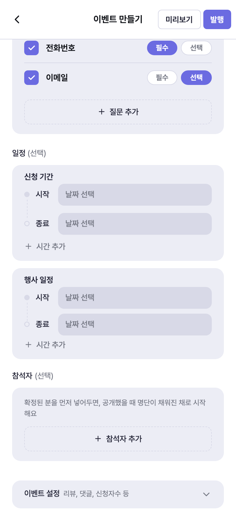
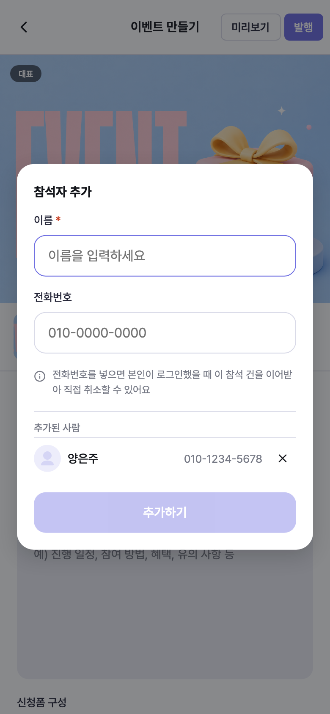
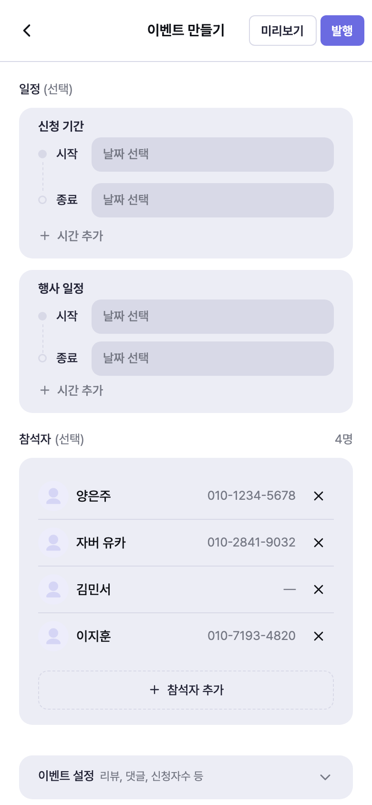
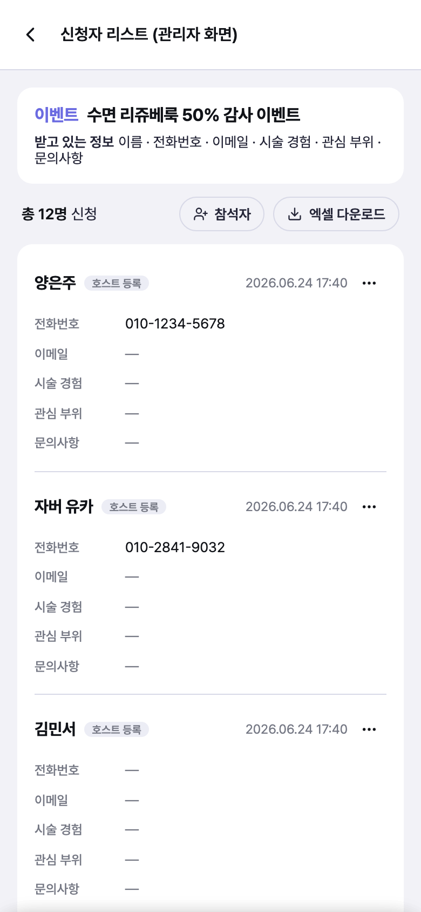
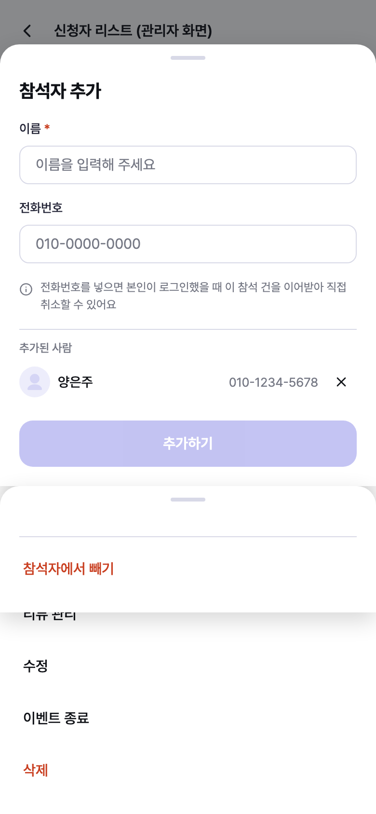
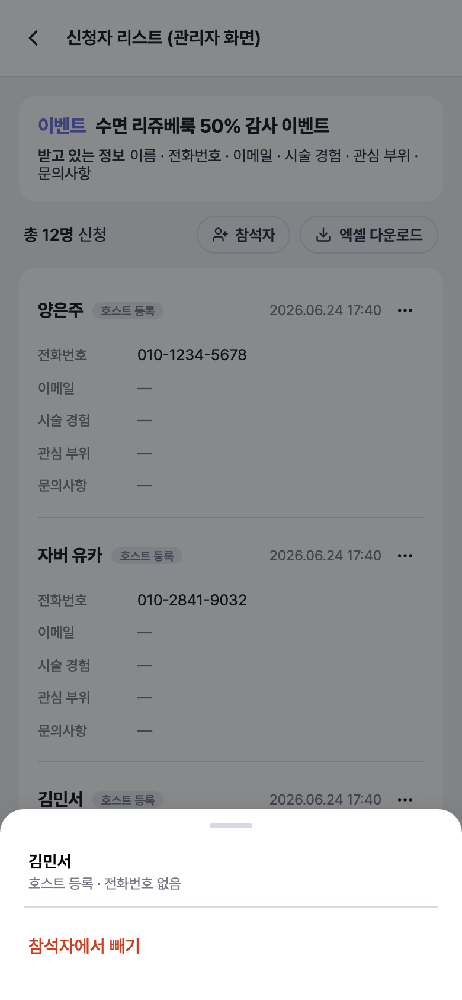
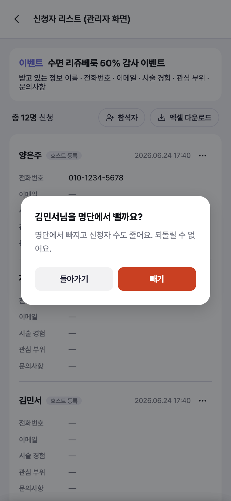
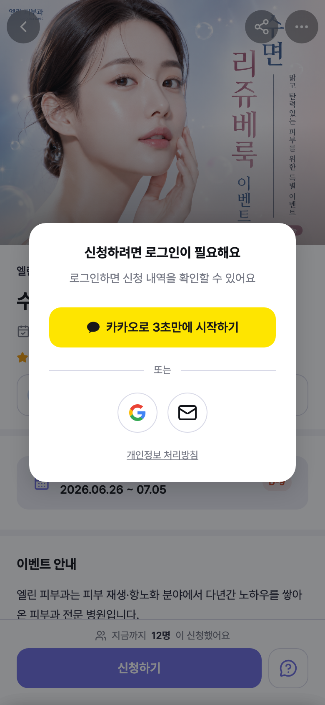
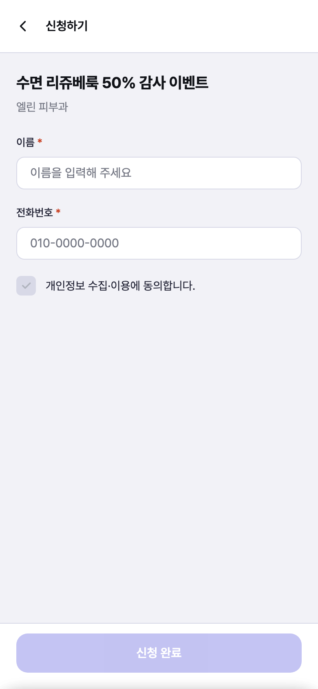
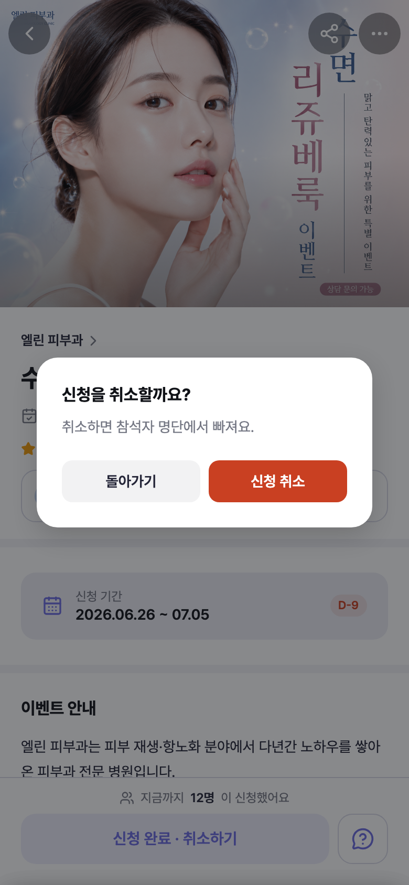

유저 플로우
운영자가 이벤트를 만들 때 참석자를 먼저 등록해두고, 그 명단이 채워진 채로 이벤트가 공개된다.
사전 등록된 사람이 나중에 직접 들어왔을 때 어떻게 같은 사람으로 이어지는지를 상태별로 정리한 문서.
핵심 규칙 — 전화번호는 계정이 아니라 “신청 건”에 붙는다
카카오로 가입하면 계정에 전화번호가 있고, 이메일로 가입하면 없다. 이 차이로 화면을 나누면 경우의 수가 계속 늘어난다. 그래서 매칭 키는 신청 폼에 입력된 전화번호 하나로 고정한다.
계정에 번호가 있으면 랜딩에 들어오는 순간 매칭되고, 없으면 신청 화면에서 번호를 적는 순간 매칭된다. 도달점은 둘 다 같다 — “나는 참석자이고, 취소할 수 있다.” 화면을 하나 더 거치느냐만 다르다.
계정에 번호가 있는 경우, 그 번호는 신청 폼을 미리 채워주는 힌트일 뿐이다. “전화번호를 등록해주세요” 같은 별도 단계는 만들지 않는다.
일정을 잡고 → 확정된 멤버를 넣고 → 공개한다. 실제 운영 순서를 화면 순서가 그대로 따라간다.



공개 후에도 명단은 계속 움직인다. 넣는 것도 빼는 것도 신청자 리스트 한 곳에서 한다 — 사전 등록 건이든 본인 신청 건이든 똑같이.




명단은 로그인 없이도 보인다. “누가 오는지”가 신청을 결정하기 때문에 로그인 뒤로 숨기지 않는다.


매칭이 실제로 일어나는 지점. 사전 등록된 사람이 이 경로로 들어와도 두 번 등록되지 않는다.

호스트등록과 신청완료는 버튼이 같다. 안내 한 줄만 다르다 — 신청한 적 없는 사람에게 “신청 완료”가 떠 있으면 혼란스럽기 때문.

같은 랜딩 한 장 위에서 아래 요소만 바뀐다. 화면 수는 늘지 않는다.
| 상태 | 참석자 스택 | “N명이 신청했어요” | 신청자 보기 | 안내 줄 | 하단 CTA |
|---|---|---|---|---|---|
| 운영자 | 목록 노출 ON일 때 | 수 노출 ON일 때 | 항상 | — | 신청하기 |
| 비로그인 | 목록 노출 ON일 때 | 수 노출 ON일 때 | 없음 | — | 신청하기 → 로그인 시트 |
| 로그인 · 미신청 | 목록 노출 ON일 때 | 수 노출 ON일 때 | 없음 | — | 신청하기 → 신청 화면 |
| 로그인 · 신청완료 | 목록 노출 ON일 때 | 수 노출 ON일 때 | 없음 | — | 신청 완료 · 취소하기 |
| 로그인 · 호스트등록 | 목록 노출 ON일 때 | 수 노출 ON일 때 | 없음 | 호스트가 등록했어요 | 신청 완료 · 취소하기 |
판단이 필요했던 지점
- 방문자 명단에서는 구분하지 않는다. 참석자 스택에 “확정”·“신청” 배지가 없다. 목적이 확정자를 구분하는 게 아니라 명단이 채워진 채로 시작하는 것이기 때문. 구분 배지는 운영자용 신청자 리스트에만 둔다 — 누가 아직 본인 확인 전인지 알아야 연락을 돌릴 수 있어서.
- 전화번호는 선택 입력이다. 명단을 빨리 채우는 게 우선. 번호 없이 등록된 사람(캡처의 김민서)은 본인이 직접 취소할 수 없다. 이 트레이드오프를 시트 안 안내 문구로 미리 알리고, 호스트가 대신 뺄 수 있는 경로를 흐름 2에 뒀다.
- 다른 번호로 신청하면 2건이 된다. 사전 등록된 사람이 다른 번호를 적으면 별개 참석자로 잡힌다. 화면으로 막지 않고 운영자가 리스트에서 정리한다 — 막으려면 본인 확인 절차가 필요해지고, 그건 이 모임 방식의 가벼움을 해친다.
- 넣고 빼는 자리를 신청자 리스트로 모았다. 수정하기(입력폼)의 참석자 카드는 발행 전에 명단을 짜는 단계다 — 거기엔 호스트가 등록한 사람만 있고, 본인이 신청해서 들어온 사람은 없다. 발행 후 명단을 정리하려면 두 종류를 같이 봐야 하므로, 빼기는 리스트 쪽에 둔다. 그래야 추가·삭제가 한 화면에서 대칭이 된다.
- 목록 노출 토글은 자동으로 켠다. 참석자를 등록해놓고 토글이 꺼져 있으면 명단이 방문자에게 안 보여서 이 운영 방식이 무력화된다. 1명이라도 추가하면 켜고 “참석자를 등록해서 켰어요”를 알린다. 다시 끄는 건 자유.